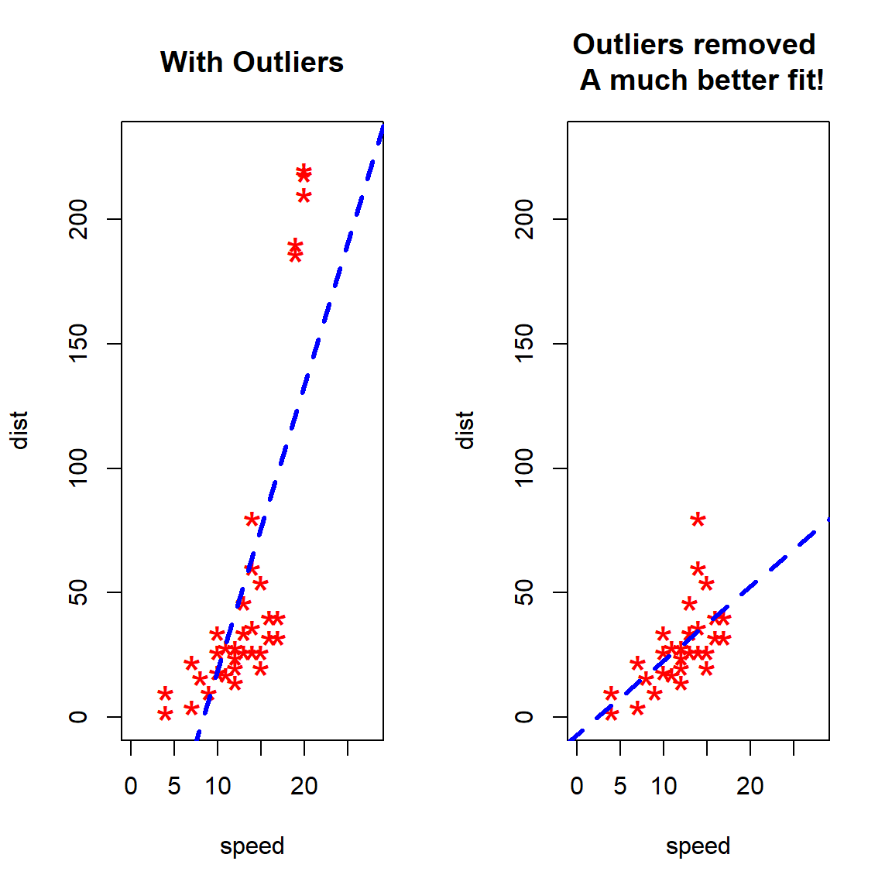
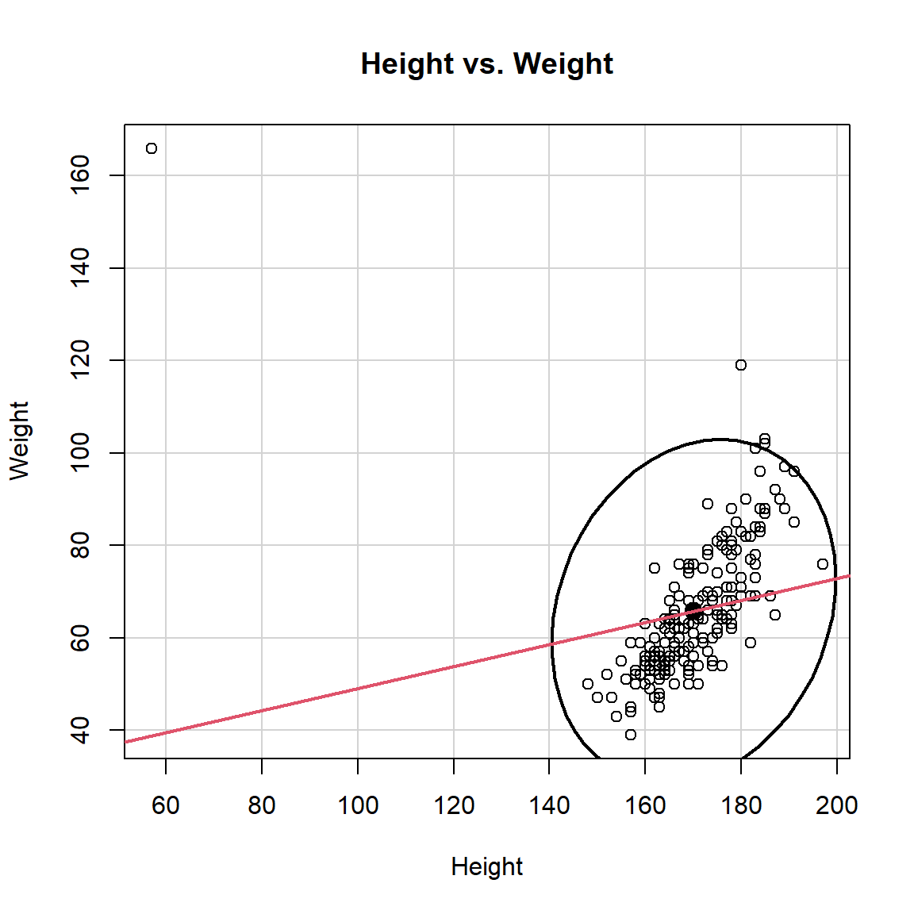

Figure 0.1: Outliers
Figure 0.1: Outliers
In the previous blog post, we’ve discussed the philosophy of outliers part 1 and outlier detection univariate methods part 2. In this 3rd post, we are going to discuss more technical details of the outlier detection in regression.
A observation that is substantially different from all other ones can make a large difference in the results of regression analysis.
Outliers play important role in regression. More importantly, separated points can have a strong influence on statistical models-deleting outliers from a regression model can sometimes give completely different results.
Let’s see the example below. This example uses the dataset-cars.
# original data
cars1 <- cars[1:30, ]
# introduce outliers.
cars_outliers <- data.frame(speed=c(19,19,20,20,20),
dist=c(190, 186, 210, 220, 218))
cars2 <- rbind(cars1, cars_outliers) # data with outliers.
# Plot of data with outliers.
par(mfrow=c(1, 2))
plot(cars2$speed, cars2$dist,
xlim=c(0, 28), ylim=c(0, 230),
main="With Outliers",
xlab="speed", ylab="dist",
pch="*", col="red", cex=2)
# regression reference line
abline(lm(dist ~ speed, data=cars2), col="blue", lwd=3, lty=2)
# Plot of original data without outliers.
# Note the change in slope (angle) of best fit line.
plot(cars1$speed, cars1$dist,
xlim=c(0, 28), ylim=c(0, 230),
main="Outliers removed \n A much better fit!",
xlab="speed", ylab="dist",
pch="*", col="red", cex=2)
abline(lm(dist ~ speed, data=cars1), col="blue", lwd=3, lty=2)
Despite all this, as much as you’d like to, it is NOT acceptable to drop an observation just because it is an outlier. They can be legitimate observations and are sometimes the most interesting ones. Like what I stated in the previous posts, it’s important to investigate the nature of the outlier before deciding. Once the outliers or unusual observations are detected, the best way to start is to ask whether the outliers even make sense, especially given the other variables you’ve collected.
It is common practice to distinguish between two types of outliers. Outliers in the response variable (DV) represent model failure. Such observations are called outliers. A regression outlier is an observation that has an unusual value of the dependent variable \(Y\), conditional on its value of the independent variable \(X\). A regression outlier will have a large residual but not necessarily affect the regression slope coefficient.
See the Figure (a) below. This is an example of an outliers without influence.
Figure 1.1: Figure (a): Outlier without influence
Although its Y value is unusual given its X value, it has little influence on the regression line because it is in the middle of the X-range.
Outliers with respect to the predictors (IV) are called leverage points.
An observation that has an unusual \(X\) value-i.e., it is far from the mean of \(X\) -has leverage on (i.e., the potential to influence) the regression line. The further away from from the mean of \(X\) (\(\bar{x}\), either in a positive or negative direction), the more leverage an observation has on the regression fit. High leverage does not necessarily mean that it influences the regression coefficients.
It is possible to have a high leverage and yet follow straight in line with the pattern of the rest of the data. High leverage observations can affect the regression model, too. Their response variables need not be outliers.
See the Figure (b) below. This is an example of high leverage observation.
Figure 1.2: Figure (b): High leverage
because it has a high value of X. However, because its value of Y puts it in line with the general pattern of the data it has no influence.
High leverage points that actually influence the slope of the regression line are called influential points. Only when an observation has high leverage and is an outlier in terms of Y-value will it strongly influence the regression line. In other words, it must have an unusual \(X-\)value with an unusual \(Y-\)value given its \(X-\)value. In such cases both the intercept and slope are affected, as the line chases the observation.
\[Influence = Leverage \times Discrepancy\] See the Figure (c) below. This is an example of a combination of discrepancy (unusual Y value) and high leverage (unusual X value) observation.
Figure 1.3: Figure (c): Combination of discrepancy (unusual Y value) and leverage (unusual X value)
This observation results in strong influence. When this case is deleted both the slope and intercept change dramatically..
In summary, outliers in regression are:
In regression it helps to make a distinction between two types of leverage points: good and bad.
A good leverage point is a point that is unusually large or small among the X values but is not a regression outlier. That is, the point is relatively removed from the bulk of the observation but reasonably close to the line around which most of the points are centered. A good leverage point has limited effect on giving a distorted view of how majority of points are associated. Good leverage points improve the precision of the
regression coefficients.
A bad leverage point is a point situated **far from the regression line* around which the bulk of the points are centered. Said another way, a bad leverage point is a regression outlier that has an X value that is an outlier among X values as well (it is relatively far removed from the regression line). Bad leverage point
has grossly effect estimate of the slope of the regression line if an estimator with a small breakdown point is used. Bad leverage points reduce the precision of the regression coefficients.
Leverage points do not necessarily correspond to outliers.
Observations whose inclusion or exclusion result in substantial changes in the fitted model (coefficients, fitted values) are said to be influential.
We are mostly concerned with regression outliers, that is, cases for which (\(x_{k_{1}},...x_{k_{p}},y_{k}\)) deviates from the linear relation followed by the majority of the data, taking into account both the explanatory variable and the response variable simultaneously. A leverage point is then still defined as a point (\(x_{k_{1}},...x_{k_{p}},y_{k}\)) for which (\(x_{k_{1}},...x_{k_{p}}\)) is outlying with respect to the (\(x_{i_{1}},...x_{i_{p}}\)) in the data set.
Many numerical and graphic diagnostics for detecting outliers and influential cases on the fit have been suggested.
In the simple regression model, one can make a plot of the \((x_{i},y_{i})\), which is called a scatterplot, in order to visualize the data structure. Many people will argue that regression outliers can be discovered by looking at the least squares residuals. Unfortunately, this is not true when the outliers are leverage points. If one would apply a rule like “delete the points with largest LS residuals”, then the “good” points would have to be deleted first. Often, influential points remain hidden, because they do not always show up in the usual LS residual plot.
A scatter plot of \(x\) versus \(y\) is used to visualize the conditional distribution \(y|x\). For the simple linear regression model, by far the most effective technique for checking the assumption of the model is to make a scatterplot of \(x\) versus \(Y\) and residual plot of \(x\) versus \(r_{i}\).
Departure from linearity in the suggests the simple linear regression model is not adequate. Points in the residual plot should scatter about the line \(r=0\) with the pattern. If curvature is present or if the distribution of the residuals depends on the value of x, then the simple linear model is not adequate. Usually, a confidence ellipse is drawn around the point cluster center coordinates. The rule of thumb is \(0.95\). Points outside of, say, 95% confidence ellipse is labeled as outlier or unusual observations.
data(Davis)
attach(Davis)
model1 <- lm(weight ~ height)
# draw 95% CI ellipse
# from library(car)
# confidenceEllipse(weakliem.model1, levels=0.95,Scheffe=TRUE)
car::dataEllipse(height, weight, levels=0.95, lty=1, col=1,
main = "Height vs. Weight",
xlab="Height", ylab="Weight")
# adding regression line
abline(model1, lwd=2, lty=1, col=2)
Diagnostics are certain quantities computed from the data with the purpose of pinpointing influential points, after which these outliers can be removed or corrected. When there are only one a single outlier, some of these methods work quite well by looking at the effect of deleting one point at a time.
The ordinary or simple residuals (observed - predicted values) are the most commonly used measures for detecting outliers.
Standardized Residuals are the residuals divided by the estimates of their standard errors. They have mean 0 and standard deviation 1. The studentized residuals are a first means for identifying outliesrs.
Attention should be paid to studentized residuals that exceed +2 or -2 and get even more concerned about residuals that exceed \(|2|\) and even yet more concerned about residuals that exceed \(|3|\).
Now lets look at the leverage’s to identify observations that will have potential great influence on regression coefficient estimates. Generally, a point with leverage greater than \(\frac{2k+2}{n}\) should be carefully examined, where \(k\) is the number of predictors (IV) and \(n\) is the number of observations.
The robust distance is defined as
\[RD(x_{i})=\sqrt{[x_{i} - \mathbf T(X)]^{T}\mathbf C(X)^{-1}[X_{i} - \mathbf T(X)]}\] where \(\mathbf T(X)\) and \(\mathbf C(X)\) are the robust location and scatter matrix for the multivariates.
One classical method to identify leverage points is inspects the use of the Mahalanobis distances \(MD_{i}\) to find outliers \(x_{i}\):
\[MD_{i}=\sqrt{(x_{i} -\mu)\times\mathbf C^{-1}(x_{i} -\mu)^{T}}\] where \(\mathbf C\) is the classical sample covariance matrix.
In classical linear regression, the diagonal elements \(h_{ii}\) of the hat matrix \[\mathbf H = \mathbf X(\mathbf X^{T}\mathbf X)^{-1}\mathbf X^{T}\] are used to identify leverage points. The i-th leverage \(h_{i} = H_{ii}\) is the i-th diagonal element of the hat matrix \(\mathbf H\).
Rousseeuw and Van Zomeren (1990) report the following monotone relationship between the \(h_{ii}\) and \(MD_{i}\)
\[h_{ii}=[((MD_{i})^2/(n-1))]+[1/n]\] where \(n\) is the number of observations.
Multiple outliers do not necessarily have large \(MD_{i}\) values because of the masking effect.
Rousseeuw and Leroy (1987) suggest using \(h_{i}>2p/n\) and \(MD_{i}^2>\chi_{p-1;0.95}^2\) as benchmarks for leverages and Mahalanobis distances.
Some researchers believe Hat-values exceeding about twice the average hat-value should be considered noteworthy
The Cook’s distance is defined
\[CD_{i}=(p\sigma^2)^{-1}(\boldsymbol{\hat{Y}_{(i)}} - \boldsymbol{\hat{Y}})^{T}(\boldsymbol{\hat{Y}_{(i)}} - \boldsymbol{\hat{Y}})\] where \(\sigma^2\) is estimator of the error variance.
Cook's distance for the \(i_{th}\) observation is based on the differences between the predicted responses from the model constructed from all of the data and the predicted responses from the modelconstructed by setting the \(i_{th}\) observation aside. For each observation, the sum of squared residuals is divided by \((p+1)\) times the Residual Mean Square from the full model. Some analysts suggest investigating observations for which Cook's distance is greater than 0.5 (\(>0.5\)).
The lowest value that Cook’s D can assume is zero (0). The conventional cut-off point is \(4/n\).
Generally, when the statistics , \(CD_{i}\), \(h_{i}\) and \(MD_{i}\) are large, case \(i\) may be an outlier or influential case.
Cook’s distance, leverages, and *Mahalanobis distance can be effective for finding influential cases when a single outlier** exist, but can fail if there are two or more outliers.
Nevertheless, these numerical diagnostics combined with plots such as residuals versus fitted values and fitted values versus the response are probably the most effective techniques for detecting cases that affect the fitted values when the multiple linear regression model is a good approximation for the bulk of the data.
\(DFITS_{i}\) is the scaled difference between the predicted responses from the model constructed from all of the data and the predicted responses from the model constructed by setting the \(i_{th}\) observation aside.
It is similar to Cook’s distance. Unlike Cook’s distance, it does not look at all of the predicted values with the i-th observation set aside. Some analysts suggest investigating observations for which \(|DFITS_{i}|\) is greater than \(2\sqrt{(p+1)/(n−p−1)}\). Cook’s D and DFITS give similar answers.
Note: Some of the contents are originally from Dagmar Blatná’s and William G. Jacoby tutorials. If you are interested in, you can find both online tutorials below.
– To be Continued